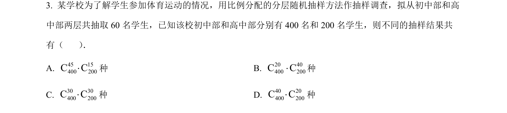
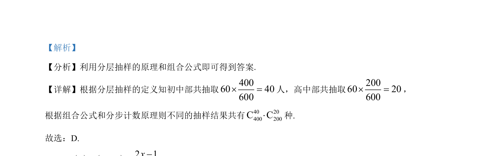

2023-新课标Ⅱ-03
吉林2023卷新课标Ⅱ不分题3题型选择难易
考点：分层抽样 组合计数 分步乘法计数原理
题面

摘要
该题考查分层抽样人数分配及组合计数基本方法，直接应用分层比例与组合公式求解。
关联考点
答案与解析

📄 原 PDF 第 1 页：素材/真题/吉林/2008-2024·（吉林）数学高考真题/2023年高考数学试卷（新课标Ⅱ卷）（解析卷）.pdf
题干文本
- 某学校为了解学生参加体育运动的情况，用比例分配的分层随机抽样方法作抽样调查，拟从初中部和高
中部两层共抽取 60 名学生，已知该校初中部和高中部分别有 400 名和 200 名学生，则不同的抽样结果共
有（ ） ．
A. 45 15400 200C C×种 B. 20 40400 200C C×种
C. 30 30400 200C C×种 D. 40 20400 200C C×种
解析文本
【答案】D